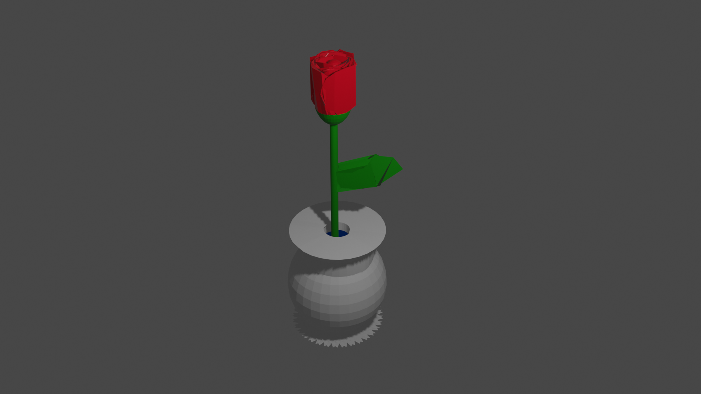
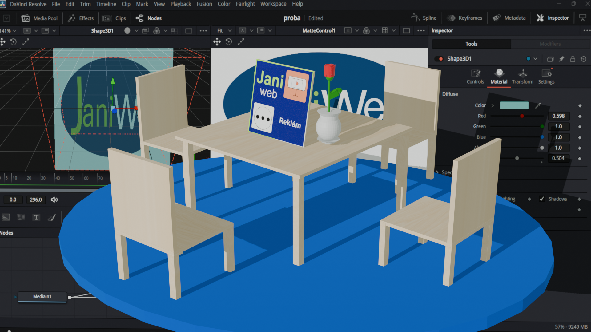
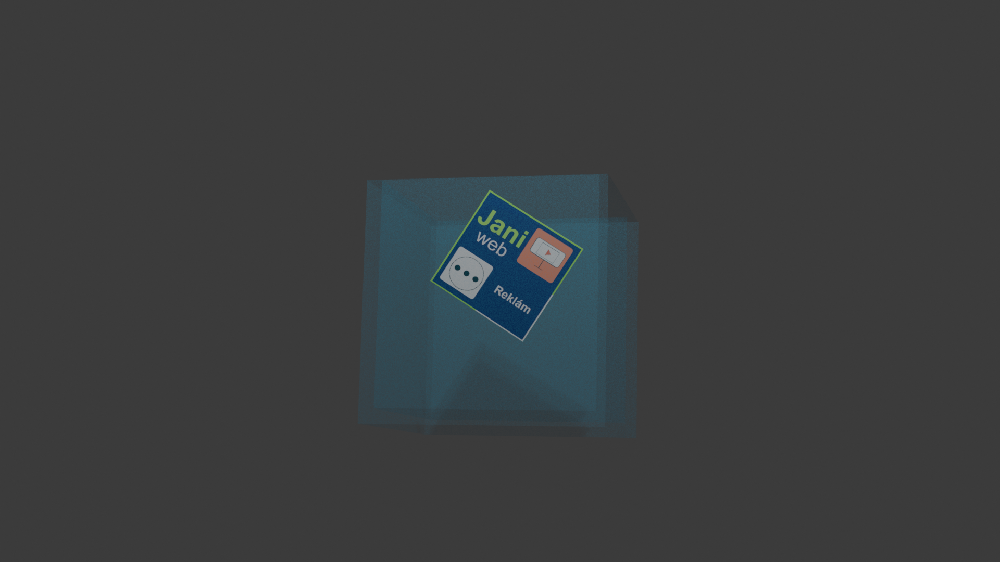
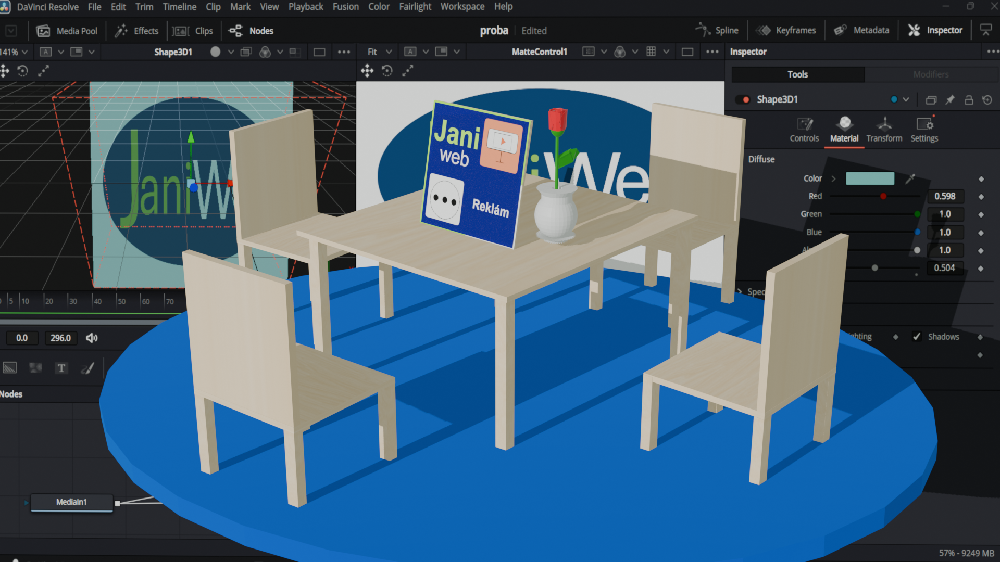
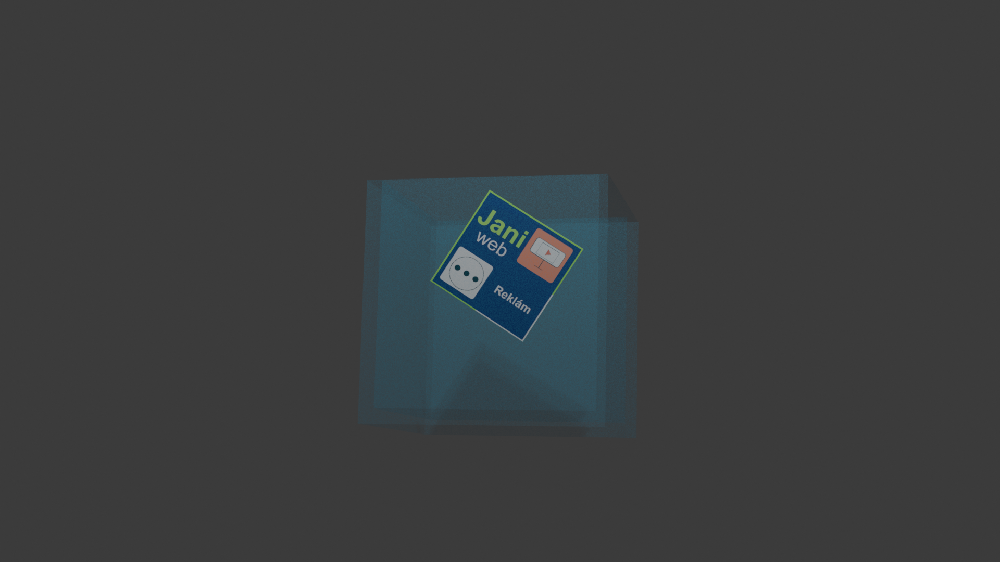

Janiról
A kezdetek
Én Budapesten születem 2008 május 1-jén
Az ovoda
Soroksáron a III. Számú Összevont Óvodába jártam.
 Ahol a régi logópéldus feladta a tanyításomat mert egy másolhangzót sem tudtam kiejteni és a lógópédus nem tudot engem megtanítani és a
törvény nem engedte hogy át menjek olyan oviba ahol lehet hogy megtudnának tanítani és ezért akkor mentem el mikor az ovis társaim
elbalagtak.
Ahol a régi logópéldus feladta a tanyításomat mert egy másolhangzót sem tudtam kiejteni és a lógópédus nem tudot engem megtanítani és a
törvény nem engedte hogy át menjek olyan oviba ahol lehet hogy megtudnának tanítani és ezért akkor mentem el mikor az ovis társaim
elbalagtak.
Az ovoda II
Amiért az orvos meg hosszabította az ovodába járás lehetőségét egy ével az Eszter Lánc Oviba
 jártam ahol volt egy logopédus valamenyire meg tanította a másalhangzókat de nem annyira sikerült.
jártam ahol volt egy logopédus valamenyire meg tanította a másalhangzókat de nem annyira sikerült.
Az iskola
Először a melletünk lévő iskolába szeretünk volna menni de azt mondták hogy meg fogok bukni hogyha nem tudok beszélni és ott nem is foglalkoztak volna a beszéd hibámal. Ezért a Pestszenimrei Ady Endre Általános iskolába mentem.
 Akkor még mikor ide jártam sni és btn iskola volt de mikor pont elmentem az iskolából akkor változott át angol és németet tanyítású iskolává ami 1. osztálytól tanítja a nyelvet. Amikor Ide jártam akkor 2. osztályosan ki tudtam hagaláb mondani a magyar abc-ben szereplő fél magánhangzót és ép hogy nem buktam meg 5. osztlytól kezdtem jó tanuló lenni és amiért beszéd hibám volt a B csoportba kellet kerülnöm és ott 4.-től németett kelet tanulnom. Abba a iskolába meg nyertem a német helyesíró versenyt 2. lettem de fel vagyok mentve helyesírásból.
Akkor még mikor ide jártam sni és btn iskola volt de mikor pont elmentem az iskolából akkor változott át angol és németet tanyítású iskolává ami 1. osztálytól tanítja a nyelvet. Amikor Ide jártam akkor 2. osztályosan ki tudtam hagaláb mondani a magyar abc-ben szereplő fél magánhangzót és ép hogy nem buktam meg 5. osztlytól kezdtem jó tanuló lenni és amiért beszéd hibám volt a B csoportba kellet kerülnöm és ott 4.-től németett kelet tanulnom. Abba a iskolába meg nyertem a német helyesíró versenyt 2. lettem de fel vagyok mentve helyesírásból.
A Pogány iskola
A Pogány Iskola
 ahova most is járok és Glóya táborban nyertem ott egy hangszórót Blok programozásal. Kaptam az egyik tanártól egy Jákob Zolis könyvet amit alá írt nekem majd Jákob Zoli mikor ide hoztam neki a H2GO-ba és ott kaptam tőle egy Garmin sq 2 okosórát. Abba az iskolába is járok röplabdázni.
ahova most is járok és Glóya táborban nyertem ott egy hangszórót Blok programozásal. Kaptam az egyik tanártól egy Jákob Zolis könyvet amit alá írt nekem majd Jákob Zoli mikor ide hoztam neki a H2GO-ba és ott kaptam tőle egy Garmin sq 2 okosórát. Abba az iskolába is járok röplabdázni.
A Digitáli közöségi műhely
Az iskolában meg kérdezték hogy kiszeretne jönni és én jelenkeztem és meg kérdezték hogy mit tudok és mondtam hogy tudok valamennyire 3D modelezni és ezeket készítettem eddig.

Mondták hogy készítsünk rózsát ezért ezt készítettem de tú részletes volt a nyomtatónak a vékony szirmai és ezért készítettem egy másikat.
 Ezér készítettem egy roszabb minőségű rozsát csak mondták hogy ne legyen szára ezért a szirmai vannak meg feje nem kellet mert azon elgurult volna.
ezért le is tettem az asztalomra.

és készítettem azóta egyéb tartalmakat amitt mind 2025-ben készítettem el.

Ezér készítettem egy roszabb minőségű rozsát csak mondták hogy ne legyen szára ezért a szirmai vannak meg feje nem kellet mert azon elgurult volna.
ezért le is tettem az asztalomra.

és készítettem azóta egyéb tartalmakat amitt mind 2025-ben készítettem el.

 Elkészítettem a Janiweb.eu amin még sok tartalom lesz.
sok mindent kihagytam de majd késöbb szeretném fejleszetni ezt a weboldalt is.
Elkészítettem a Janiweb.eu amin még sok tartalom lesz.
sok mindent kihagytam de majd késöbb szeretném fejleszetni ezt a weboldalt is.